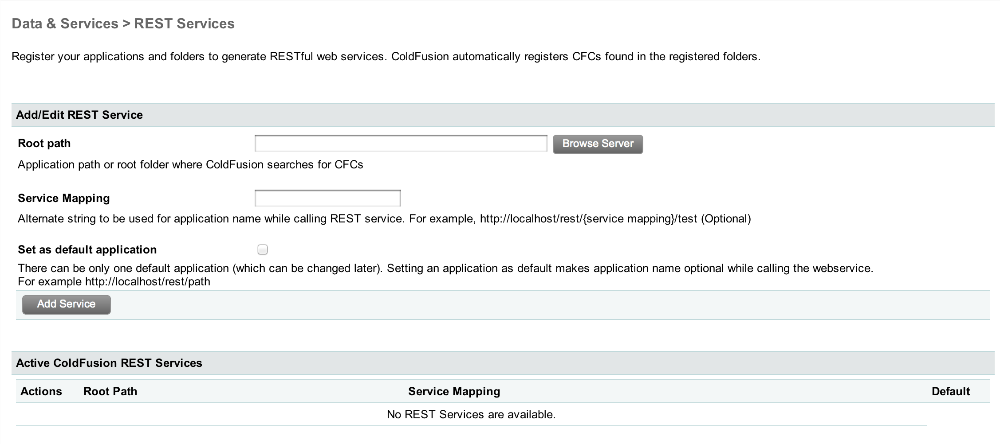

REST Web Services in ColdFusion 10
Presented by Raymond Camden / @cfjedimaster
Who am I?
- Developer Evangelist for Adobe
- ColdFusion, Ajax, HTML5, Mobile, Star Wars expert
- Blogging at www.raymondcamden.com
- Tweeting at @cfjedimaster

What is REST?
- "Representantional State Transfer" and was first coined way back in 2000.
- Focused on URLs that represent a resource...
- And verbs based on HTTP to manipulate them
Example of a simple web service
- example.com/api.cfc?method=getUsers
- example.com/api.cfc?method=getUser&userid=1
- example.com/api.cfc?method=deleteUser&usertodelete=1
Example of REST-based web service
| URL | Method |
|---|---|
| example.com/api/users | GET |
| example.com/api/users/1 | GET |
| example.com/api/users/1 | DELETE |
REST in ColdFusion 10
- Based on CFCs (no surprise there)
- Requires registration
Registering REST Services
- ColdFusion Administrator or Code
- Defines the base URL for your REST service (!! Pay Attention !!)
- Must be refreshed on every darn change
Registering REST Services
Determining the URL
http://YOURSERVER / rest / {service mapping/app name} / {cfc restpath (more on that in a moment)}
Real Example
http://127.0.0.1/rest/RestPreso/greetService
CFC Syntax
- rest="true" at top level
- restPath at the top level (final part of the URL)
- Lots of additional metadata
Example
component rest="true" restPath="greetingService" {
remote string function sayHello() httpMethod="get" {
return "Hello World";
}
}
How in the heck is this working?!?!
- The restPath defines the core URL (but not the only URL as we will see soon)
- How you call the CFC determines the method run
- This is NOT based on URL parameters (although...)
- This is based on HTTP headers
Demo
Run /getpost.cfm
Valid HTTP Methods
- GET
- POST
- PUT
- DELETE
- HEAD
- OPTIONS
More info: Wikipedia
Content Negotiation
- Your REST service may wish to support different data formats
- You can build support to respond based on what the client asks for
Demo
Run /testcontentnegotiation.cfm
Side Notes
- You can override the encoding. (Will show if we have time...)
- You can specify in the URL: baseurl.json or baseurl.xml
Break
Subresources
If http://SOMEURL/users represents all users, how do I specify a user?
http://SOMEURL/users/5
Subresources
Your subresource can be anything - it could be a specific user or a specific type of users.
http://SOMEURL/users/5 (user #5)
http://SOMEURL/users/top (best users)
http://SOMEURL/users/top/comments (best users by # of comments)
Subresources - how it's done
- restPath argument to cffunction
- Supports static and regex style paths
Demo
Static subresources.
Subresources - Dynamic
- Specify {something} in restPath
- Specify {something:REGEX} to match a regex
- Should map to arguments in the CFC
Demo
Dynamic subresources.
Putting it Together
Misc...
- restInitApp (Note - can't make a default)
- restDeleteApp
More misc...
- restSetResponse
- Used with returnType=void
- Gives precise control over the result
Any Questions
- web: raymondcamden.com
- email: raymondcamden@gmail.com
- twitter: @cfjedimaster